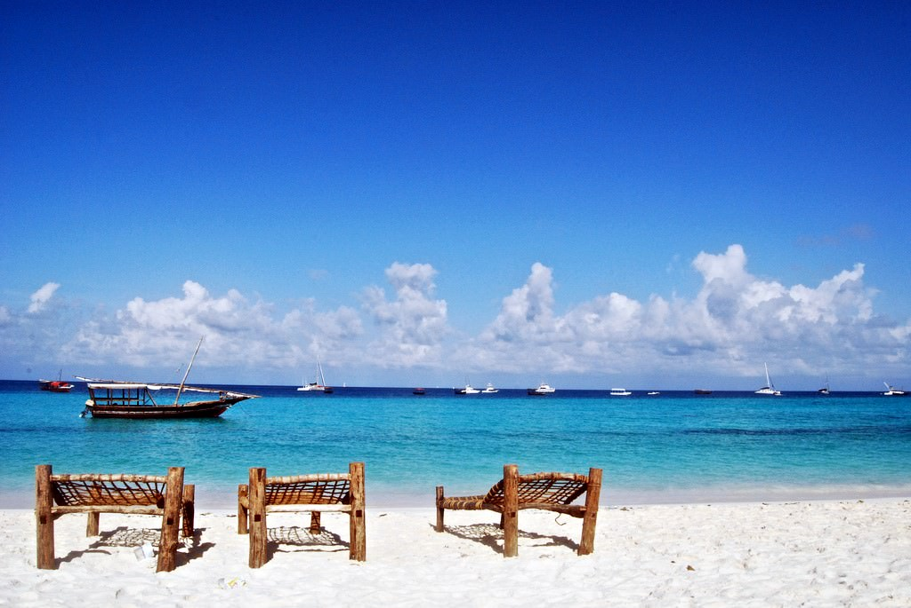
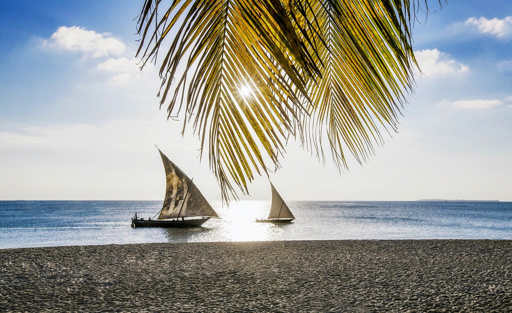
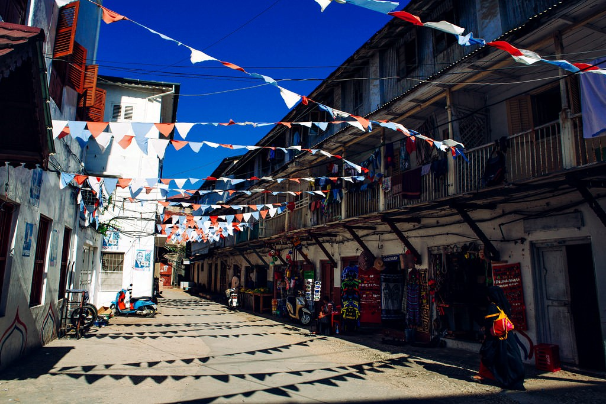
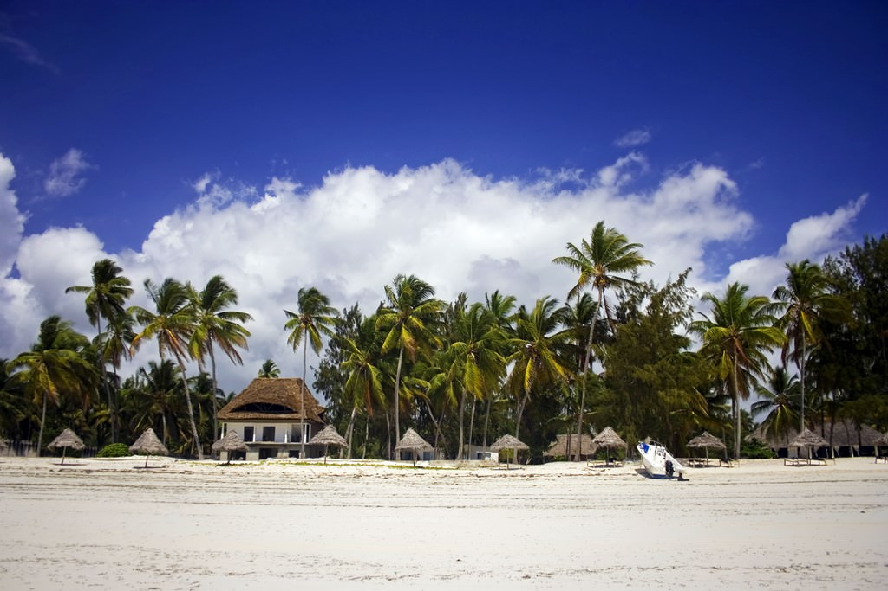

Отдых на Занзибаре: всё, что нужно знать
Занзибар для многих путешественников все еще terra incognita, хотя за последние годы этот остров из неведомой африканской глубинки превратился в популярный, в меру доступный и интересный курорт. Для всех, кто никак не может решиться на путешествие в Занзибар, мы подготовили ответы на топовые вопросы о поездке на остров.
Занзибар: как добраться?
Занзибар – райский остров, принадлежащий Танзании и омываемый со всех сторон теплым Индийским океаном. Это те самые бескрайние пляжи с белоснежным песком и невероятной бирюзовой водой, которые можно увидеть в рекламе, это вдохновляющая природа и увлекательный местный колорит.Что делать на Занзибаре? Вариантов уйма. Знакомиться с местной культурой, впитывать яркие краски, наслаждаться красотой природы. Этот остров подойдет и искателям приключений, которых здесь ждут прогулки по джунглям, экскурсии по островам, дайвинг, кайтсерфинг, и путешественникам, жаждущим тихого, умиротворенного отдыха – на острове очень спокойная и расслабляющая атмосфера. 
Занзибар: условия въезда?
Для пересечения границы требуется тест на COVID-19, сделанный не более, чем за 96 часов до прибытия, также нужно иметь при себе медицинскую страховку, которая покрывает лечение коронавируса. Помимо этого путешественники должны заполнить медицинскую онлайн форму, подача формы может производиться не более чем за 24 часа до пересечения границы. После регистрации будет сгенерирован код, который нужно предъявить по прибытию. Перед путешествием на остров советуем обязательно проверить условия въезда. Безопасность на Занзибаре
Сегодня Занзибар — цивилизованный и спокойный уголок. Современные отели, кафе и рестораны, большой выбор развлечений в сочетании с удивительной природой, теплым океаном и добродушным местным населением делают остров вполне безопасным местом для отпуска. Но некоторых правил все же лучше придерживаться. Итак, в Занзибаре никогда не давай деньги за товар или услугу вперед, не гуляй в одиночестве по ночам, не свети крупной суммой денег перед незнакомцами и не лови такси с руки.Что касается здоровья: плавая в океане, будь на чеку, ведь всегда есть риск повстречать морских ежей; в сезон дождей и межсезонье возрастает вероятность быть укушенным малярийными комарами — возьми в аптечку качественные репелленты и профилактические средства. Не стоит опасаться ядовитых змей и прочих пресмыкающихся – да, они есть на острове, но обитают в джунглях, куда редко захаживают люди.
Занзибар: где остановиться?
Как и любой экзотический остров, Занзибар, помимо стандартных отелей и комплексов, может предложить лоджи и бунгало у берега океана. Стоит это удовольствие от €20 за ночь для двоих, однако есть и элитные комплексы с бунгало для ценителей более дикого, но все-таки комфортного отдыха, в них за соломенную крышу над головой придется заплатить от €100 и выше.Двухместные номера в гестхаузах, недорогих гостиницах и лоджах обойдутся от €35 (и в стоимость включен трансфер из аэропорта), многие из них, что немаловажно, также расположены у берегов океана. Отели 5* ничем не уступают тем, какие можно увидеть на популярных курортах, ни в сервисе, ни в цене, остановиться вдвоем можно от €170 (за ночь).
Для тех, кто хотел бы сэкономить на проживании, есть хостелы и кемпинги. Стоимость места — от €15.
Где остановиться на Занзибаре? Любителям уединенного, пляжного отдыха и отдыхающим с детьми подойдет западное побережье – там тихое и спокойное море, а любителям водных видов спорта подойдет юго-восточная часть, где время от времени можно поймать хорошие волны. Для северной части также характерны волны, приливы, и просто поплавать здесь вряд ли выйдет. Однако это также один из самых оживленных районов острова, где полно баров, кафе и ресторанов.
Чем заняться на Занзибаре и что посетить?
Разумеется, Занзибар может предложить стандартный курортный перечень развлечений: дайвинг, сноркелинг, кайтсерфинг, — все есть, школы обучения водным видам спорта тоже имеются. Также туристам предлагают рыбацкие прогулки, в том числе экскурсионные, в рыбацкие деревни, где можно не только поймать рыбу на ужин, но и познакомиться с местными. Достопримечательностей на острове тоже хватает. Так, обязательно нужно посмотреть:
Что еще нужно знать об отдыхе на Занзибаре?
Несмотря на то, что Танзания — мусульманская страна, никаких жестких требований к туристам нет – можно одеваться так, как пожелаешь. Да и, в целом, местные жители Занзибара очень приветливы, радушны и искренни к гостям, с радостью подскажут, помогут советом. Разговаривают здесь преимущественно по-английски и на суахили, особенно местные рады, если путешественники хоть пару слов скажут им на суахили, например, «сана» — спасибо, или «джамбо» — привет, имей в виду.Валюта Танзании и, в частности, Занзибара — это танзанийский шиллинг, но можно рассчитываться и долларами, их принимают в кафе, сувенирных лавках, отелях, и даже цены зачастую указаны именно в долларах. Не стесняйся торговаться, сделать это можно практически везде, кроме супермаркетов. Цену обычно можно «сбить» минимум вдвое.